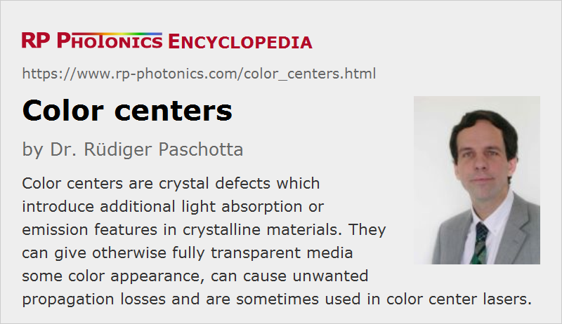

Color Centers
Definition: crystal defects which introduce additional light absorption or emission features in crystalline materials
Alternative term: F-centers
German: Farbzentren
Category: physical foundations
How to cite the article; suggest additional literature
Author: Dr. Rüdiger Paschotta
Color centers are crystal defects which introduce additional light absorption and/or emission features in crystalline materials, because they have electronic properties which substantially deviate from those of the undisturbed crystal lattice. For example, it can occur that an electrically negative ion is missing at a certain lattice position, and electrons fill the vacancy, being trapped by surrounding positive ions. In other cases, ions have migrated to an unusual interstitial position.
The alternative term F-center goes back to the German term Farbzentrum (with Farbe = color).
Origins of Color Centers
Such crystal defects can have different origins:
- They can be created during crystal growth, particularly under non-ideal conditions such as relatively low growth temperature, leading to a low mobility of ions “searching” for their correct lattice position.
- In some cases, thermally induced fluctuations lead to deviations from a perfect crystal lattice. This leads to substantial color center densities in certain crystal materials such as lithium chloride and zinc oxide when they are heated to high temperatures.
- There can be influences from high-energy radiation such as gamma rays, which can transfer substantial energy to particular ions, allowing them to move to unusual positions. Ultraviolet light, e.g. with wavelengths below 200 nm, can be sufficient for such processes; for example, it can lead to a degradation of transmissivity (increased propagation losses) in envelope glasses of ultraviolet light sources such as excimer lamps. Note that such generation processes often create two related kinds of crystal defects at a relatively close distance: an interstitial ion and a vacancy.
- Under some circumstances, the formation of color centers is possible involving excitation energy of laser-active ions in laser gain media. While the excitation energy of a single ion is usually insufficient for such a process, excitation energies of several ions may sometimes be combined at high enough excitation densities. The rate of color center formation is then proportional to some high power of the excitation density (with the exponent depending on the number of involved ions). Such processes are involved in the context of photodarkening of materials such as ytterbium-doped fibers.
Defect Healing by Thermal Excitation
Crystal effects can often be healed based on thermal excitations, which allows ions to relax to their “normal” positions. In fact, some color centers which are used in color center lasers are healed quite rapidly at room temperature. Therefore, such crystals need to be permanently kept at cryogenic temperatures to preserve the color centers. Other color centers start to disappear with an appreciable rate only at higher temperatures of hundreds of degrees Celsius, or cannot be healed at all by heating.
Absorption and Emission
Frequently, color centers with a sufficiently high density cause substantial absorption of light at optical wavelengths where there would normally be no absorption, since the photon energy is below the band gap energy. The effect of the defects can be described as introducing additional defect levels in the energy level diagram, which lie between the conduction and balance band, so that lower-energy photons are allowed to participate in absorption processes. As a result of the additional absorption, some naturally completely transparent crystals exhibit pronounced colors due to some density of colors centers. For example, transmitted light may look yellow if color centers lead to the absorption of blue light. In other cases, where a material with lower band gap energy is already naturally yellow, the effect of additional absorption by color centers is a less apparent color change.
It is also possible that crystal defects allow the emission of light at new wavelengths – spontaneous emission and also stimulated emission. The latter is exploited in color center lasers. They are normally based on crystals where certain color centers are induced by high-energy irradiation. Certain laser wavelengths can be reached by such lasers, which are difficult to reach with other laser sources.
Quenching of Radiation
Crystal defects like color centers are sometimes observed to favor the non-radiative decay of excited laser-active ions. For example, there may be an energy transfer from an excited ion to a nearby color center, which subsequently radiates the energy very quickly (typically at somewhat longer wavelengths). At the same time, the emission of the laser-active ions is quenched.
Note that the color centers can have much shorter upper-state lifetimes, compared with laser-active ions.
Questions and Comments from Users
Here you can submit questions and comments. As far as they get accepted by the author, they will appear above this paragraph together with the author’s answer. The author will decide on acceptance based on certain criteria. Essentially, the issue must be of sufficiently broad interest.
Please do not enter personal data here; we would otherwise delete it soon. (See also our privacy declaration.) If you wish to receive personal feedback or consultancy from the author, please contact him e.g. via e-mail.
By submitting the information, you give your consent to the potential publication of your inputs on our website according to our rules. (If you later retract your consent, we will delete those inputs.) As your inputs are first reviewed by the author, they may be published with some delay.
See also: absorption, band gap, propagation losses, photodarkening
and other articles in the category physical foundations
|  |
If you like this page, please share the link with your friends and colleagues, e.g. via social media:
These sharing buttons are implemented in a privacy-friendly way!